Zona Australis
Kenali fauna yang tercantum pada wilayah ini melalui foto, daerah asal, klasifikasi taksonomi, dan ciri khasnya.
Kenali satwa di zona Australis
Gunakan pencarian untuk menemukan nama atau daerah persebaran.
7 dari 7 fauna ditampilkan
| Fauna | Asal & persebaran | Taksonomi | Ciri khas |
|---|---|---|---|
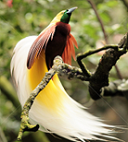 Burung Cendrawasih |
Papua 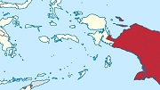 |
Lihat klasifikasi
|
Berukuran sedang dengan panjang sekitar 32 cm. Burung ini berwarna kuning dan coklat, berparuh abu-abu kebiruan dan mempunyai iris mata berwarna kuning. Baca selengkapnya |
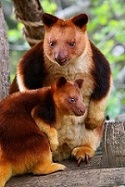 Kangguru Pohon |
PapuaPeta persebaran tidak dicantumkan |
Lihat klasifikasi
|
Kanguru pohon sebagian besar masa hidupnya ada di pohon. Moncong kanguru pohon bentuknya lebih runcing jika dibandingkan dengan moncong kanguru darat. Ekornya agak panjang dan bulat, berbulu lebat dari pangkal sampai ekornya. Baca selengkapnya |
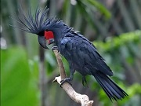 Kakatua Raja |
Papua 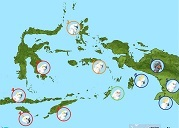 |
Lihat klasifikasi
|
sejenis burung Kakatua berwarna hitam dan berukuran besar, dengan panjang sekitar 60 cm. Burung ini memiliki kulit pipi berwarna merah dan paruh besar berwarna kehitaman. Di kepalanya terdapat jambul besar yang dapat ditegakkan. Baca selengkapnya |
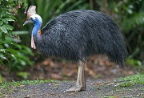 Kasuari Gelambir-Ganda |
Papua dan Maluku 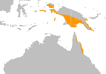 |
Lihat klasifikasi
|
Kasuari gelambir ganda berukuran besar, tinggi mencapai 170 cm, dan memiliki rambut berwarna hitam yang keras, dan kaku. Kulit lehernya berwarna biru dan terdapat dua buah gelambir berwarna merah pada lehernya. Terdapat tanduk yang tinggi berwarna kecoklatan di atas kepalanya. Baca selengkapnya |
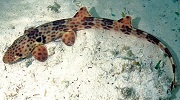 Hiu Halmahera |
Maluku 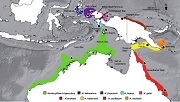 |
Lihat klasifikasi
|
Merupakan hewan nokturnal atau beraktivitas hidup pada malam hari. Kebiasaan unik dari hiu ini adalah “berjalan” pada saat mencari mangsa yang berupa ikan kecil, invertebrata bentik, dan udang-udangan. Baca selengkapnya |
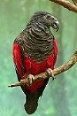 Nuri Kabare |
PapuaPeta persebaran tidak dicantumkan |
Lihat klasifikasi
|
Paruhnya yang mirip dengan burung elang berwarna kehitaman, bulu pada tubuhnya didominasi oleh warna hitam di bagian kepala, leher hingga dada dan bagian dorsal tubuhnya (punggung hingga ujung ekor), sedangkan perutnya berwarna merah hingga pangkal ekor dan sedikit di bagian sayap. Baca selengkapnya |
Labi-labi Moncong Babi |
Papua 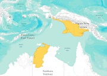 |
Lihat klasifikasi
|
Ciri khas hewan ini, sesuai namanya, terletak pada hidung yang seperti babi. Bagian karapas atau cangkang bagian atas berwarna abu-abu dengan tekstur kasar, sedangkan plastron atau kulit keras yang melindungi bagian dadanya berwarna krem. Baca selengkapnya |